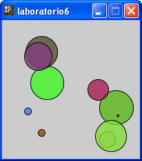
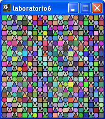

Recuerda que los colores y tamaños deben ser lo mas parecidos a los dibujos solicitados.
1. Crea un programa que realice el siguiente dibujo. El programa muestra 10 círculos con posición aleatoria entre 25 y 175 tanto en x como en y, mientras que su radio va de 1 a 50. Como te puedes dar cuenta, tienen un color igualmente aleatorio y cuentan con trasparencia. La ventana es de 200 X 200.

2. Crea un programa que realice el siguiente dibujo. Nuevamente el color asignado es aleatorio, lo importante es que respetes el patrón de pintado. Es decir primero un cuadrado, luego un triangulo y al final el círculo. En este caso la ventana es de 200 X 200.

Sección de ejercicios opcionales
3. Realiza los ajustes necesarios a los dos ejercicios anteriores para que estén preparados para un cambio en el tamaño de la ventana.